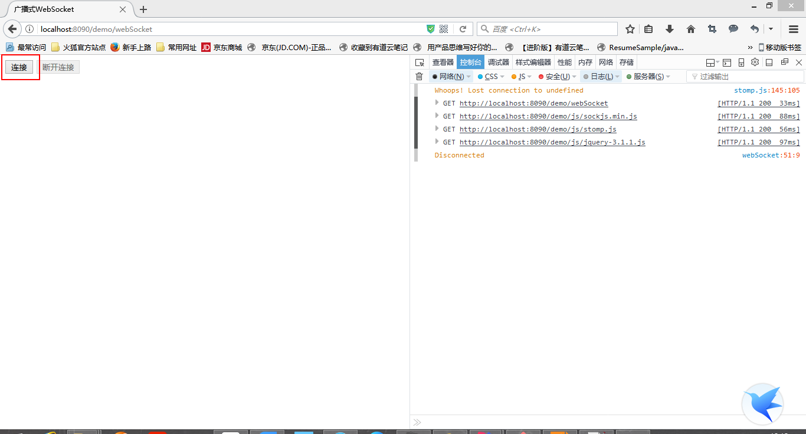
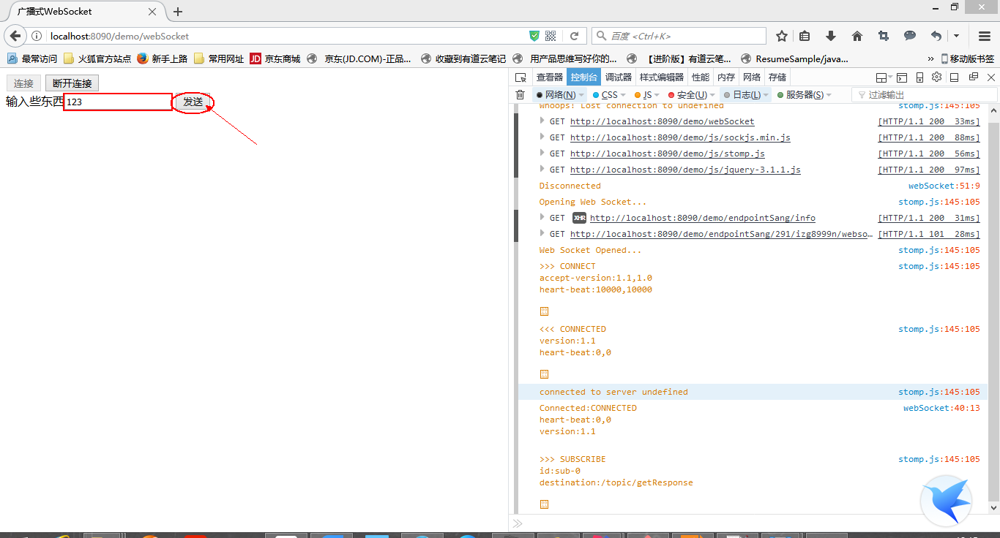
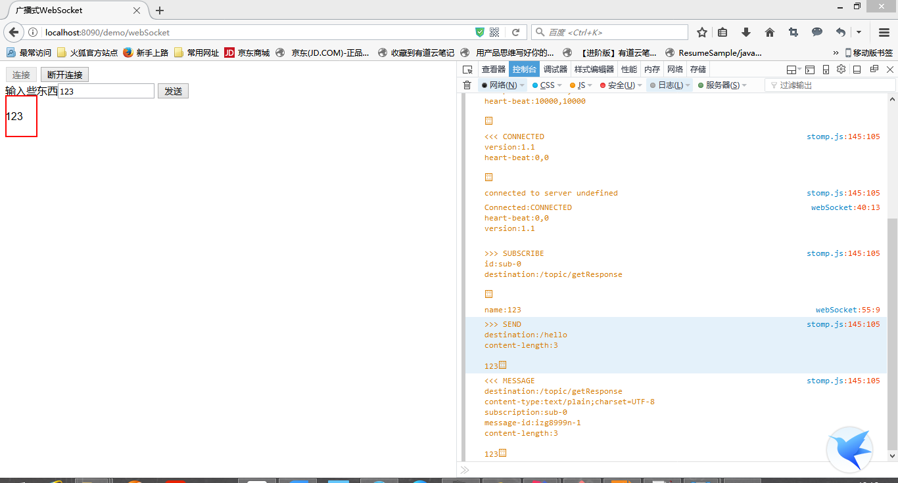

最近的需求需要用到WebSocket建立长连接，所以研究记录下。
1.首先引入WebSocket依赖1
2
3
4<dependency>
<groupId>org.springframework.boot</groupId>
<artifactId>spring-boot-starter-websocket</artifactId>
</dependency>
2.发布WebSocket终端后缀/endpointSang和代理注册路径/topic，需要一个配置类WebSocketConfig继承AbstractWebSocketMessageBrokerConfigurer，注意加上@Configuration和@EnableWebSocketMessageBroker注解
1 |
|
3.声明WebSocket控制器， @MessageMapping接收请求，@SendTo响应请求，括号中是接收和响应的路径
1 |
|
4.前台除了jQuery还需要引入两个js库，sockjs.min.js和stomp.js.整个通信过程依赖一个SocketJs对象，一个由socket生成的stomClient对象。先通过SocketJs订阅终端，然后通过stomClient获得连接，通过其subscribe()方法中的回调函数接收响应，通过send()方法发送消息。1
2
3
4
5
6
7
8
9
10
11
12
13
14
15
16
17
18
19
20
21
22
23
24
25
26
27
28
29
30
31
32
33
34
35
36
37
38
39
40
41
42
43
44
45
46
47
48
49
50
51
52
53
54
55
56
57
58
59
60
61
62
<html lang="en" xmlns:th="http://www.thymeleaf.org">
<head>
<meta charset="UTF-8"/>
<title>广播式WebSocket</title>
<script th:src="@{js/sockjs.min.js}"></script>
<script th:src="@{js/stomp.js}"></script>
<script src="https://code.jquery.com/jquery-1.11.3.js"></script>
</head>
<body onload="disconnect()">
<noscript><h2 style="color: #e80b0a;">Sorry，浏览器不支持WebSocket</h2></noscript>
<div>
<div>
<button id="connect" onclick="connect();">连接</button>
<button id="disconnect" disabled="disabled" onclick="disconnect();">断开连接</button>
</div>
<div id="conversationDiv">
<label>输入些东西</label><input type="text" id="name"/>
<button id="sendName" onclick="sendName();">发送</button>
<p id="response"></p>
</div>
</div>
<script type="text/javascript">
var stompClient = null;
function setConnected(connected) {
document.getElementById("connect").disabled = connected;
document.getElementById("disconnect").disabled = !connected;
document.getElementById("conversationDiv").style.visibility = connected ? 'visible' : 'hidden';
// $("#connect").disabled = connected;
// $("#disconnect").disabled = !connected;
$("#response").html();
}
function connect() {
var socket = new SockJS('/demo/endpointSang');
stompClient = Stomp.over(socket);
stompClient.connect({}, function (frame) {
setConnected(true);
console.log('Connected:' + frame);
stompClient.subscribe('/topic/getResponse', function (response) {
showResponse(response.body);
})
});
}
function disconnect() {
if (stompClient != null) {
stompClient.disconnect();
}
setConnected(false);
console.log('Disconnected');
}
function sendName() {
var name = $('#name').val();
console.log('name:' + name);
stompClient.send("/hello", {}, name);
}
function showResponse(message) {
$("#response").html(message);
}
</script>
</body>
</html>
在这个地方遇到一个坑，刚开始当创建连接时，总是404：http://localhost:8082/endpointSang/info [HTTP/1.1 404 ]，我百思不得其解，哪里跑出来的/info？，后来我想了一下，发现我配置了项目后缀/demo，1
2
3server:
port: 8082
context-path: /demo
那么完整的路径应该是http://localhost:8082/demo/endpointSang/info，所以我试着把new SockJS('/endpointSang')中的路径换成了http://localhost:8082/demo/endpointSang，果然好了。后来又换成/demo/endpointSang也是可以的。但是为什么后面发送接收消息的时候不需要加前缀呢，可能是SocketJs类库默认从项目根路径/为起点访问吧。
5.测试结果



- 在测试中是在一个页面上，发送和接收消息，实际上WebSocket是为了解决双向通信而提出的协议，支持跨域，因此可以在不同页面上得到相应，只要页面上通过终端获取了长连接。但是随之而来的是如何保证安全的问题。这个问题今后慢慢研究。